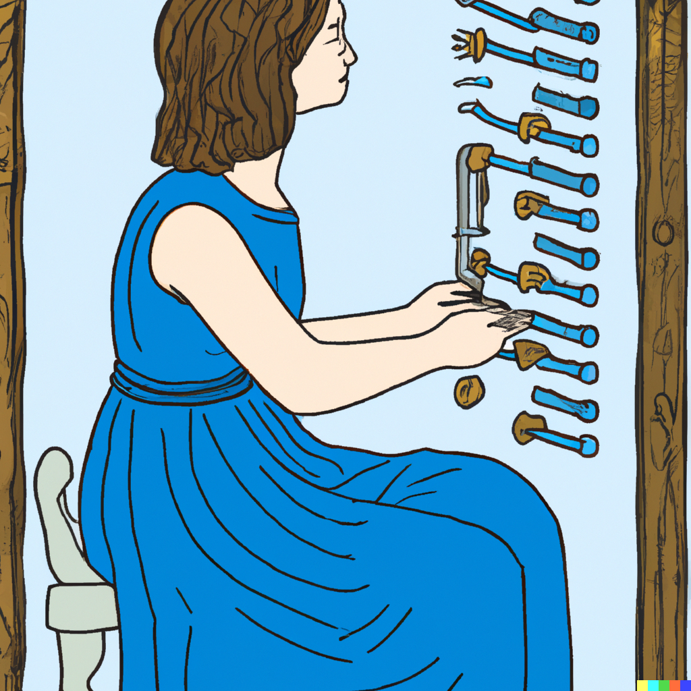

1 Introduction to R
What you’ll have learned by the end of the chapter: reading and writing, exploring (and optionally visualising) data.
1.1 Reading in data with R
Your first job is to actually get the following datasets into an R session.
First install the {rio} package (if you don’t have it already), then download the following datasets:
Also download the following 4 csv files and put them in a directory called unemployment:
Finally, download this one as well, but put it in a folder called problem:
and take a look at chapter 3 of my other book, Modern R with the {tidyverse} and follow along. This will teach you to import and export data.
{rio} is some kind of wrapper around many packages. You can keep using {rio}, but it is also a good idea to know which packages are used under the hood by {rio}. For this, you can take a look at this vignette.
If you need to import very large datasets (potentially several GBs), you might want to look at packages like {vroom} (this benchmark shows a 1.5G csv file getting imported in seconds by {vroom}. For even larger files, take a look at {arrow} here. This package is able to efficiently read very large files (csv, json, parquet and feather formats).
1.2 A little aside on pipes
Since R version 4.1, a forward pipe |> is included in the standard library of the language. It allows to do this:
4 |>
sqrt()[1] 2Before R version 4.1, there was already a forward pipe, introduced with the {magrittr} package (and automatically loaded by many other packages from the tidyverse, like {dplyr}):
library(dplyr)
Attaching package: 'dplyr'The following objects are masked from 'package:stats':
filter, lagThe following objects are masked from 'package:base':
intersect, setdiff, setequal, union4 %>%
sqrt()[1] 2Both expressions above are equivalent to sqrt(4). You will see why this is useful very soon. For now, just know this exists and try to get used to it.
1.3 Exploring and cleaning data with R
Take a look at chapter 4 of my other book, ideally you should study the entirety of the chapter, but for our purposes you should really focus on sections 4.3, 4.4, 4.5.3, 4.5.4, (optionally 4.7) and 4.8.
1.4 Data visualization
We’re not going to focus on visualization due to lack of time. If you need to create graphs, read chapter 5.